White_dune
White_dune ist ein freier(GPL)
Cross-Plattform (Linux, FreeBSD, MacOSX, Microsoft Windows, Rasberry PI)
3D-Modeller und Animationswerkzeug.
Mit white_dune kann man 3D Objekte basteln/ändern und animieren, die man
auch über WebGL direkt im Webbrowser laufen lassen oder ins RIB renderman
Format (für die Film-Erzeugung) wandeln kann. Man kann das Ergebnis auch
in C oder C++ übersetzen, so dass ein "normales" OpenGL-Programm entsteht.
Installation und Konfiguration
Im Dezember 2019 wurde white_dune in Fedora Linux 32 aufgenommen
(Installation mit "dnf install wdune wdune-docs").
Für Ubunutu Linux-Distributionen steht ein "snap" Packet zur
Verfügung.
In Debian und Ubuntu steht ein white_dune-Packet zur Verfügung, das
jedoch völlig veraltet ist.
Auf der Homepage von white_dune stehen Pakete mit Installationsanleitungen
für folgende Linux-Distibutionen zur Verfügung:
-
OpenSUSE LEAP 15.2 Linux
Installation mit zypper und rpm
-
Debian Buster Linux
Installation mit dpkg und apt
-
Ubuntu 18.04 LTS Linux für PCs
Installation mit dpkg und apt
-
Rasbian 10 Linux für den Rasberry PI
Installation mit dpkg und apt
-
Ubuntu Linux für ARM-Chromebooks
Installation mit dpkg und apt
-
Arch Linux für PCs
Installation mit pacman
Die Konfiguration in white_dune erfolgt über Dialoge im Options-Menü,
die nach dem Programm-Ende unter Linux in der Textdatei $HOME/.dunerc landet.
Intern benutzt white_dune den ISO-Standart X3D/VRML97 als Speicherformat.
Über Options lässt sich white_dune von der englischen Sprache in die
deutsche (oder italienische oder französiche) Sprache umstellen.
Unter Linux kommt white_dune mit 2 Icons:
-
Das 4kids Icon startet ein GUI, das für Anfänger und Kinder
geeignet ist.
-
Das normale Icon startet ein GUI, das für Benutzer, die X3D/VRML97
einsetzen
(z.B. um Interaktion oder Scripting zu einem Architektur-3D-Modell
hinzuzufügen),
gedacht ist.
Mit der 4kids-Version lässt sich zum Beispiel mit etwas Übung in
15 Minuten die Animation des folgenden Screenshots erzeugen.

Es git Tutorials,
wie white_dune bei,der 3D Modelling und bei der Animation eingesetzt werden
kann.
Geschichte
White_dune startete nicht mit dem Anspruch, ein Werkzeug für 3D Modellierung
und Animation zu schaffen, sondern war am Anfang ein Spezialwerkzeug für
VRML97 3D-Dateien.
Im Jahr 1999 schuf der Kanadier Stephan F. White die wichtigsten Grundlagen
des Programms, gab aber im Jahr 2000 schon wieder auf.
Am 31. Mai 2000 wurde entschieden, das Projekt unter dem Namen "white_dune"
weiterzuführen.
Seitdem wurde es massiv ausgebaut.
Modellierung
White_dune hat zur Zeit 8 Haupt-Modelling-Möglichkeiten:
-
NURBS
NURBS beschreibt eine Formel mit deren Hilfe man mit wenigen
Konstrollpunkten viele Meshpunkte beschreiben kann.
Eine NURBS-Kugel braucht z.B. nur 20 Kontollpunkte und kann dann mit dem
Verschieben der Kontollpunkte leicht in ein NURBS-Herz verändert werden
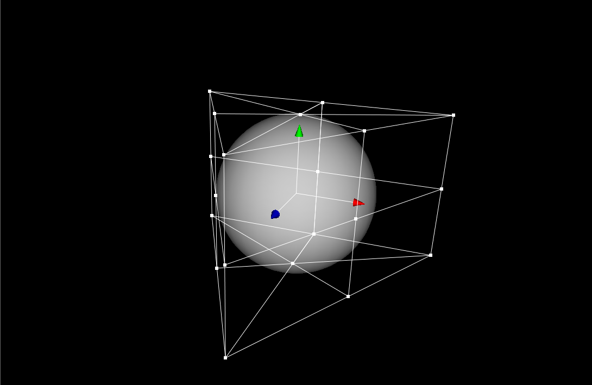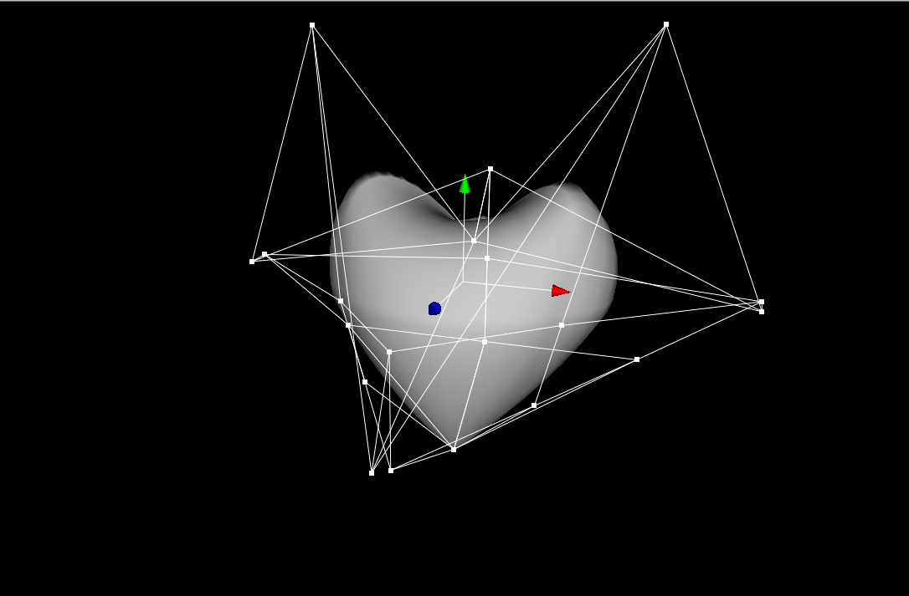).
Mit der 2D-NURBS-Formel lassen sich alle mathematischen Kurven beschreiben,
auch Kurven mit Ecken und Spitzen.
In white_dune können alle Primitive (Box, Kugel, Zylinder und Kegel),
sowie alle Superformel-basierten Oberflächen in NURBS-Objekte
umgewandelt werden.
-
Superformel
Die Superformel basiert auf einem ähnlichen Konzept wie NURBS:
Mit nur 12 (in white_dune 24) Parametern lassen sich die Meshpunkte
vieler symetrischer Oberflächen erzeugen:
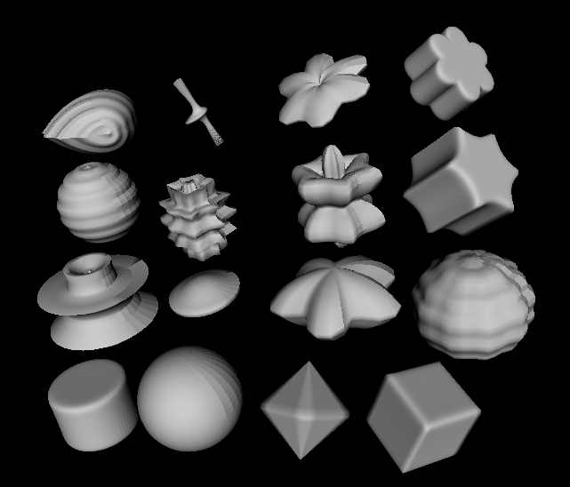
So lassen sich zum Beispiel bei einem Superformel-Seestern-3D-Modell
die Anzahl der Seestern-Arme mit nur einem Parameter kontrollieren.
white_dune kennt die folgenden Superformel-basierten Objekte:
-
SuperShape: benutzt die Superformel in zwei Dimensionen
-
Superformel in einer Dimension:
-
SuperExtrusinon:
Torus und Röhre/Hörn
-
SuperRevolver:
Drehkörper (z.B. Pilz)
-
SuperEllisoid:
Ein Spezialfall der Superformel: mit nur 2
(in white_dune 12) Parametern lassen sich
Kugel, Oktraeder, Box und Zwischenformen beschreiben
-
Extrusion:
Mit dem Extrude-Befehl lassen sich aus einer Mesh (Grundlage: Box konvertiert
zu Mesh/IndexedFaceSet und "inset" Befehl) bestimmte Polygone
herausziehen.
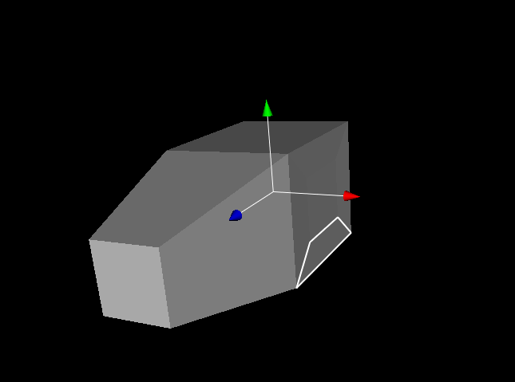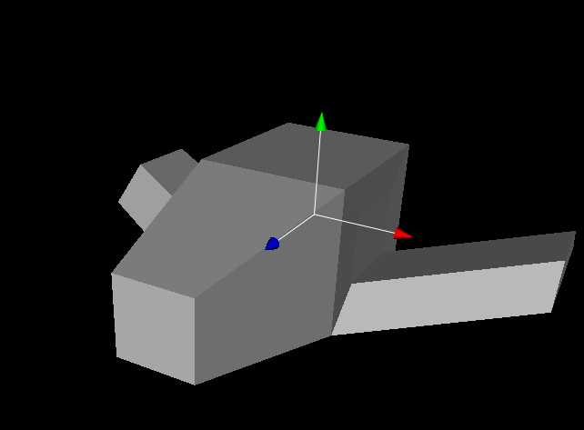
-
Subdivision
Der Subdivide-Befehl wird häufig nach dem Extrude-Befehl eingesetzt.
Damit können (möglichst geschlossene) Mesh-Objekt runder gemacht
werden.
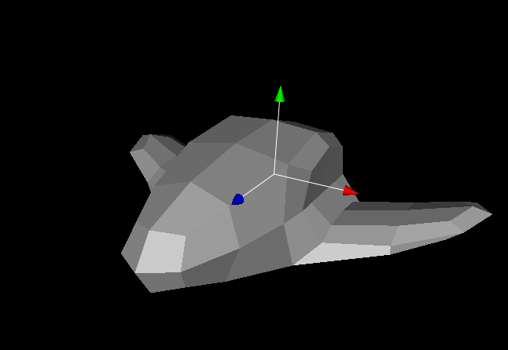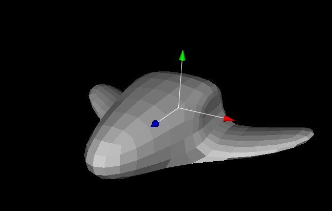
-
Boolean Operationen
Mit Boolean Operationen können 3D-Objekte vereinigt oder voneinander
abgezogen werden.
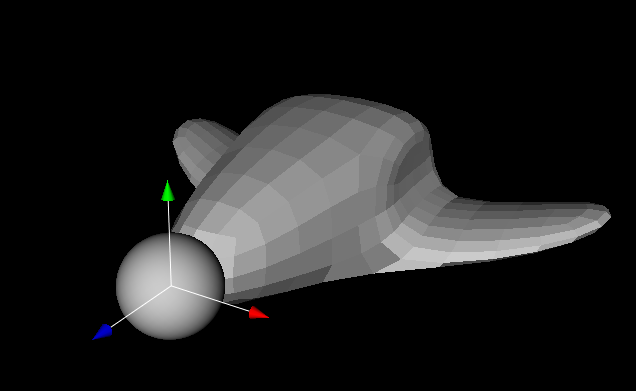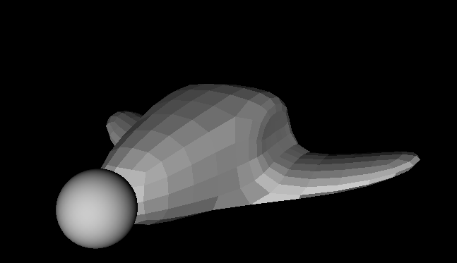
-
Mesh-Reducer
Es gibt zwar den Parameter "creaseAngle" bei der eine Mesh (IndexedFaceSet
in X3D), die Flächennormalen so beeinflusst, dass die Kanten nicht mehr
auffallen,
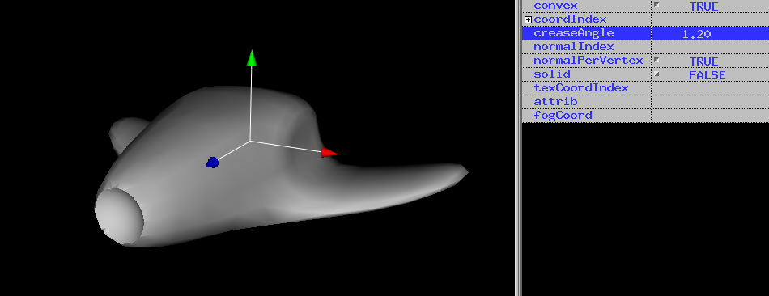
aber der Subdivide-Befehl lässt die Polygonzal
der Mesh quadradrisch expoldieren.
Deswegen ist es für ein Echzeit-3D-Format wie X3D oder OpenGL wichtig,
einen leistungsfähigen Mesh-Reducer zur Verfügung zu haben, der
die Anzahl
der Polygone verringert, aber die grobe Form der Mesh möglichst wenig
verändert
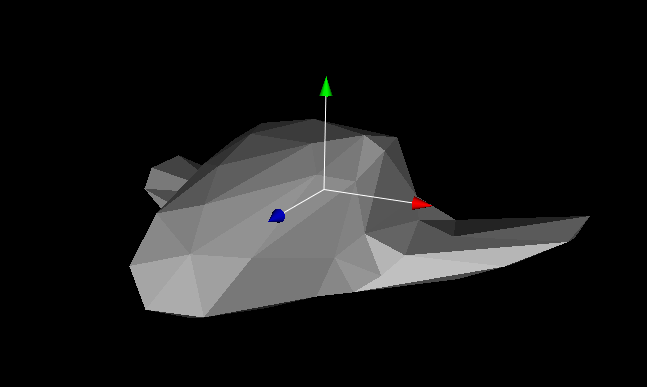
Nach dem Mesh-Reducer Befehl wird häufig wieder der Extrude-Befehl
benutzt.
-
Vertex-Modifier
Damit lassen sich Beulen aus Mesh- oder NURBS-Objekten herausziehen oder
Beulen hineindrücken.
Allerdings erfordert diese Modellierungs-Möglichkeit, dass viele Mesh-
oder NURBS-Kontollpunkte zur Verfügung stehen
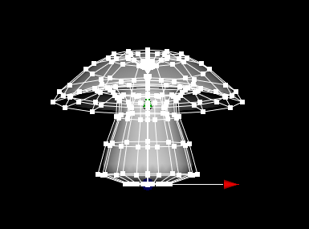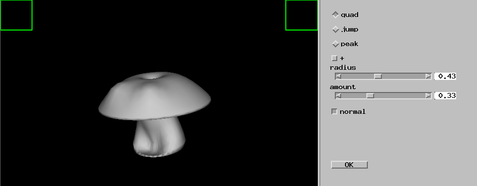
Es gibt in white_dune einen Befehl für NURBS-Objekte, der die Anzahl der
NURBS-Kontollpunkte ver&auuml;ndert.
-
Convex hull
Mit der convex hull lassen sich viele verschiedene Objekte erzeugen.
Dabei werden 2 mal Punkte (z.B Mesh-Punke oder
NURBS-Kontrol-Punkte) ausgewählt und in einer Mesh so miteinenander
verbunden, dass eine umschliessende Hülle ensteht).
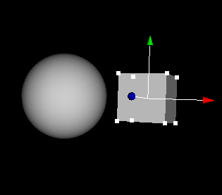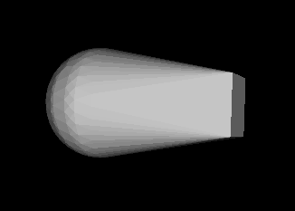
Animation
White_dune hat zur Zeit 2 Animations-M&oouml;glichkeiten:
-
Normale Animation:
Damit lässt sich alles animieren, das in X3D animierbar ist.
Dabei kann in einem "ChannelView"-Fenster die Animation
beeinflussen oder eine Animation (z.B. Farbe mit dem Farb-Rad)
mit den "Record und Play" Buttons aufgenommen werden.
-
Kurven-Animation:
Damit lässt sich nur die Knoten "Transform" (Verschieben und Drehen)
und "Viewpoint" (Kamera Verschieben und Drehen) beeinflussen.
Dabei folgt eine Objektgruppe oder die Kamera einem Pfad.

Filmerzeugung
Steht eine X3D-Datei mit einer Animation zur Verf&umml;gung, kann mit
$ run_dune_and_aqsis.sh datei.x3dv
dune und der freie Renderman Filmrenderer "aqsis" so aufgerufen werden,
dass paralell an den Bildern gerechnet wird.
Steht das Programm "mencoder" zur Verfügung (z.B unter Ubuntu oder
Debian Linux),
wird eine Film-Datei "datei.mp4" erzeugt.
Ansonsten erzeugt "aqsis" viele Einzelbilder, die mit imagemagicks "animate"
betrachtet werden k&oml;nnen:
$ animate -alpha off datei*.tiff
Vergleich mit Blender
-
Blender hat ein wichtiges 3D-Objekt "Metaballs" mit dem man auf einfachem
Weg miteinander verbundene 3D-Objekte erzeugen kann
-
Blender hat mehr Werkzeuge um Mesh-Objekte zu verändern
-
Mit Blender kann man die Materialeigenschaften (z.B Spiegelung) für
die einzelnen Bilder besser kontrollieren als in white_dune, das für
Echtzeit-3D-Graphik gemacht ist
-
Für Blender gibt es Materialien-Sammlungen zum Herunterladen
-
Der Vertex-Modifier in Blender kann nicht nur Dellen und Beulen, sondern
auch das Malen von zusammenhängenden Ausbeulungen mit der Maus
-
Der Vertex-Modifier in Blender kann keine NURBS-Objekte bearbeiten.
-
Es gibt einige NURBS-Operationen in white_dune, die in Blender nicht
vorhanden sind
-
Blender hat Werkzeuge für Haare, white_dune nicht
-
Blender ist weitaus schwieriger zu bedienen als white_dune 4kids
white_dune und die Grapikleistung eines Systems
white_dune ist ein Echtzeit-3D-Programm.
Die gute Bedienbarkeit hängt von der Graphikkarte und der Anzahl der
benutzten Objekte ab. Ist die Graphikkarte überlastet, ruckeln die Objekte
bei der Animation und es wird schwierig, ein Objekt zu bearbeiten, zu
verschieben oder zu drehen.
Ein (NURBS-)Objekt in white_dune hat ca. 3000 Polygone.
Leider gibt es unter Linux ein Problem mit dem quelloffenenen Treiber fuer
NVIDIA Graphikkarten (noveau-Treiber): bestimmte Graphikkarten-Modelle
frieren manchmal hart ein. Dann muss man den speziellen Nvidia-Treiber fuer
die Graphikkarte installieren.
Die folgende Tabelle zeigt die Grenze, bis zu wieviele Objekte
(ohne Morphing) noch halbwegs flüssig dargestellt werden:
| Graphikkarte | Klasse | System | System-Takt | NurbsObjekte |
| PowerVR GX6250 | 1 | ARM Chromebook | 4x2.0 GHz | 1 |
| ATI Radeon HD 6290 | 2 | ADM C-60 Netbook | 2x1.0 GHz | 1 |
| Intel HD Graphics 3000 | 2 | Intel I5 Laptop | 4x2.5 GHz | 11
|
| VideoCore VI | 2 | Raspberry PI 4 | 4x1.5 GHz | 10 |
| Nvidia NVS 5200M | 3 | Intel I7 Laptop | 8x2.2 GHz | 16 |
| Nvidia GT 320 | 3 | Core2Duo Macbook | 4x2.4 GHz | 24 |
Es gibt noch schnellere Systeme...
Klasse bedeutet:
| 1: | kein 3D-Graphik-Treiber | (alles wird mit der CPU
berechnet) |
| 2: | Integrierte Graphik | (Shared Memory Graphik) |
| 3: | Dezidierte Graphik | (Der Speicher auf der Graphikkarte
wird nur von der Graphikkarte benutzt) |
Offensichtlich ist eine bessere Graphikkarte für die Graphikleistung
wichtiger als die CPU.
Was tun, wenn es ruckelt, weil die Graphikleistung nicht ausreicht ?
white_dune mit der Option "-tessellation" starten
Zum Beispiel "$ dune -tessellation 16 -4kids datei.x3dv"
-
1 (NURBS-)Objekt hat jetzt 480 Polygone, unterscheidet sich aber nicht
stark vom Default (-tessellation 0 bzw. 32)
-
4 mal mehr (NURBS-)Objekte möglich bzw. es ruckelt weniger
-
Nur die Darstellung wird "kantiger", nicht die (NURBS-)Objekt-Daten
-
Die Darstellung wird wieder "weicher" wenn die Datei (ohne "-tessellation")
auf einem schnelleren Rechner mit besserer Graphikkarte läuft
-
Das Rendering mit aqsis (für die Filmerzeung) ist nicht betroffen
-
X3D Problem:
(NURBS-)Objekte lassen sich nicht anmalen
Als Alternative kann man Bilder/Texturen (z.B. *.PNG Dateien) auf die
3D-Objekte kleben
white_dune für Kinder
White_dune "4kids" wurde bei Kinder-Computer-Trickfilm-Projekten eingesetzt.
Zum Beispiel entstand bei der Stadtranderholung Leonberg 2006/2007 an jeweils
einem Nachmiitag ein kleiner Trickfilm einer Alien-Raumschiff-Landung.
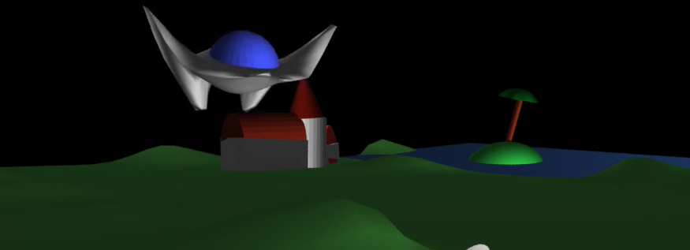
Die Kindern waren zwischen 7 Jahre und 13 Jahre alt.
white_dune und meschliche Animation
White_dune unterstützt als X3D Editor alle sichtbaren X3D Befehle
einschliesslich "HAnim" (menschliche Animation).
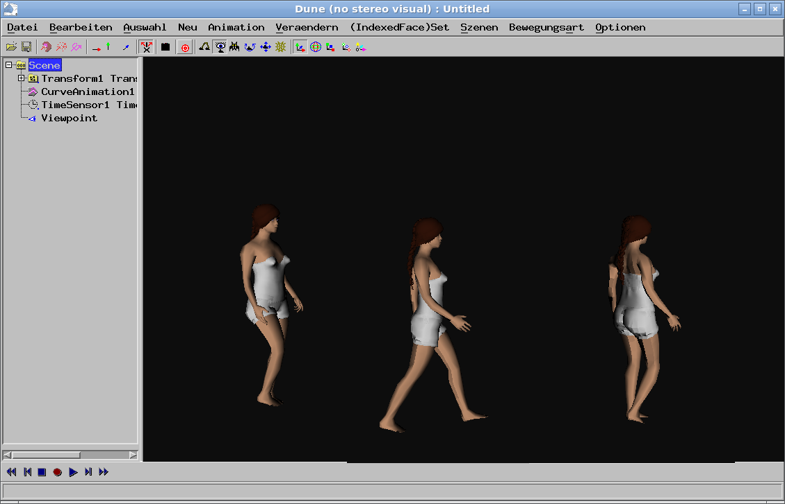
Mit dem "makehuman"-Programm
(einer
Blender-Weiterentwicklung) lässt sich die Mesh eines Menschen erzeugen.
Dabei sollte darauf geachtet werden, dass nur relativ wenige Mesh-Punkte
exportiert werden.
Die Zuordnung der einzelnen Meshpunkte auf Körperteile (wie Arm oder Fuss)
erfolgt in white_dune, allerdings ist das sehr aufwendig.
Im Endergebnis können die einzelnen Gelenke gedreht werden, so dass man
eine Animation erstellen kann.
Wie kann ich die Weiterentwicklung von white_dune unterstüzen ?
Die white_dune Menüs stehen in Englisch, Französisch, Italienisch
und Deutsch zur Verfügung.
Ins Portugisische wurde nur das "4kids"-Menü übersetzt.
Die Dialoge sind nur teilweise übersetzt, nur die deutschen und englischen
Dialoge und Fehlermeldungen sind vollständig übersetzt.
Für die Übersetzung braucht man keine Programmierkenntnisse,
da Micro$oft Resource-Files verwendet werden.
Dabei sind die einzelnen Worte/Sätze in
"doppelten Gänsefüsschen" eingeschlossen.
Bei Problemen mit white_dune und Ideen zu neuen Features kann sich jeder per
E-mail wenden an:
mufti11@web.de
white_dune hat ca. 300 000 Zeilen in C++/C/.h/.m4-Dateien, es ist also ein
relativ grosses Programm.
Intern bentzt white_dune ein 2D-GUI-API in der Programmiersprache C namens
"libswt" (das heisst wohl "Stephan White Toolkit").
Unter Linux wird motif und OpenGL 2 benutzt.
Das ist etwas altmodisch.
Der grosse Vorteil daran ist, dass in 20 Jahren nur ein Patch wegen einer
API-Änderung geschrieben werden muste.
Der Patch hatte mit lesstif zu tun, einem Open-Source-Nachbau von motif.
Inzwischen steht auch motif für Linux unter einer Open-Source-Lizenz zur
Verfügung, so dass die lesstif-Programmierung eingestellt wurde.
Wenn white_abstürtzt, versucht es noch, die X3D-Daten in eine Datei zu
retten.
Das funktioniert nur dann, wenn die interne Datenstruktur noch intakt ist,
zum Beispiel bei einem Absturz im Graphik-Code.
white_dune ruft normalerweise unter Linux bei jedem Speichern einen "rcs"
(oder seit Neuestem "git") revision-contol-system-Befehl auf.
Damit lassen sich im Nachhinein alle Änderungen an einer X3D-Datei
nachvollziehen und eine bestimmte Version aus dem repository
restaurieren.
Das ist ein sehr wichtiges Feature beim Arbeiten mit Kindern...